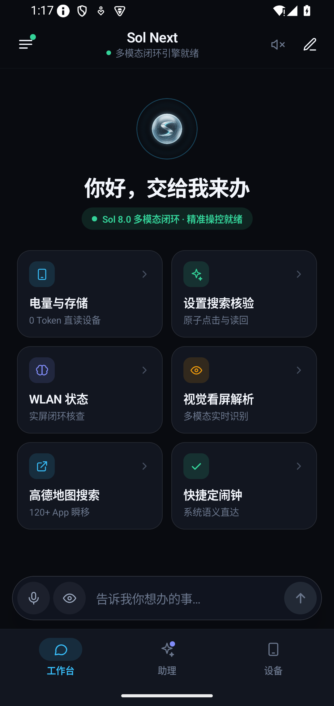
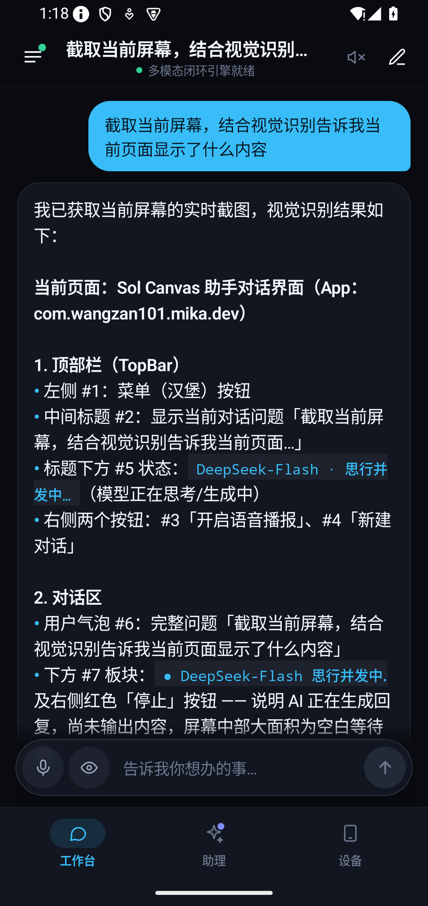
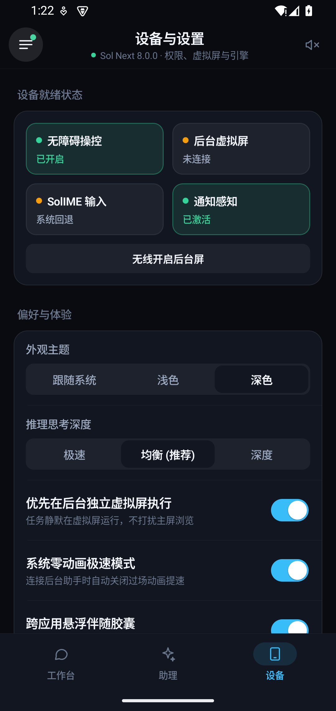
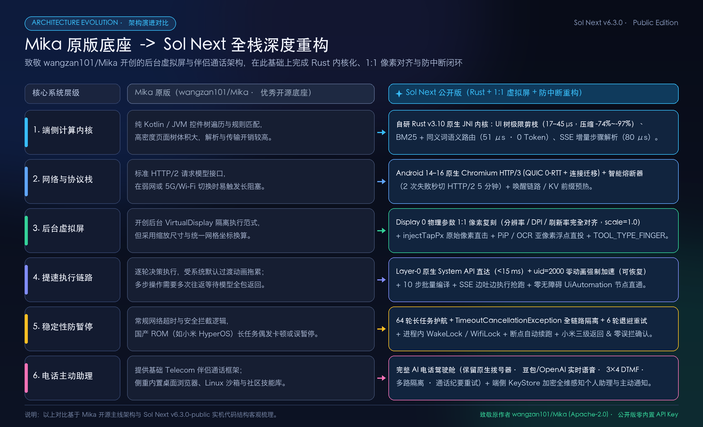
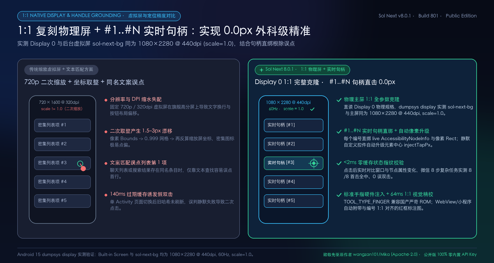

面向 Android 10–16 的
多模态闭环 OS 智能体
The Grounded Multimodal
Android OS Agent
从执行内核到界面全栈重构：10 个正交原子工具、实时元素句柄精准绑定、1:1 Set-of-Mark 自动视觉精校、Rust v5.00 原生加速与 Studio 极简工作台。100% 开源零内置密钥，自带任意 OpenAI 兼容模型 Key 30 秒开用。 Rebuilt from first principles in v8.0: 10 orthogonal typed tools, live Accessibility handle grounding, automatic 1:1 Set-of-Mark multimodal vision, Rust v5.00 JNI acceleration, and a calm Studio workspace. 100% open BYOK with zero embedded secrets.
ai.sol.nextZero Embedded Secrets Audited
Studio 极简工作台Studio Workspace
零冗余浮层，聚焦自然语言指令、常用快捷任务与一键视觉看屏。Calm, distraction-free command surface with instant vision capture and quick tasks.

多模态闭环核验卡片Verified Closed-Loop Trace
每一步真实工具调用与视觉核验均可折叠回溯，附精确耗时遥测。Collapsible step-by-step execution proof with verified status badges and latency telemetry.

设备就绪矩阵与 BYOK 引擎Device Hub & Native BYOK
2×2 权限状态矩阵、1:1 后台虚拟屏配对、本地 BYOK 引擎与 OTA 检测。2×2 readiness matrix, wireless VirtualDisplay pairing, local BYOK config, and OTA updater.
不是套壳提示词，而是端到端重构的 OS 执行内核 Engineered from First Principles for Precision & Speed
面向微信、淘宝、美团、系统设置等真实复杂 Android 应用，8.0.1 完成了感知层、实时句柄绑定与动作后验契约的全链路重构。 Purpose-built to eliminate misclicks, silent no-ops, goal drift, and duplicate sends across real-world Android super-apps.
实时元素句柄 #1..#N + 零缓存状态指纹（根治误点与误双击）
Live Element Handles #1..#N + Zero-Cache State Fingerprinting
每个屏幕编号 #id 直接绑定到实时 AccessibilityNodeInfo 对象句柄与像素坐标矩形，彻底消灭传统按文本匹配误点列表首项的问题。点击后通过零缓存 <2ms 状态指纹校验 text / checked / selected / focus 变化，杜绝单 Activity 页面（如微信 LauncherUI）误双击，仅在真实静默无响应时自动升级为像素中心点击。
Every #id binds directly to its live AccessibilityNodeInfo handle and exact pixel Rect, eliminating Item-#1 list misclicks. Post-click verification uses an uncached <2ms state fingerprint across text, checked, selected, and focus states—preventing false double-taps on single-Activity screens while auto-escalating genuine silent no-ops to pixel-center taps.
单次发送后验契约与防重发停机Single-Shot Send Contract
点击「发送」强制通过 4×85ms 只读气泡核验输入框清空 + 右侧新气泡出现；若送达状态未确认立即安全停机，绝不二次误发。同步兼容格式化分组手机号（如 138 0013 8000）与离屏 Tab 子树裁剪。
Clicking Send enforces 4×85ms read-only bubble polling to verify input clearance and outgoing delivery. Unconfirmed sends halt immediately to guarantee zero duplicate messages, alongside grouped-digit readback matching (138 0013 8000).
1:1 红框 Set-of-Mark 自动视觉精校1:1 Set-of-Mark Auto Vision
遇到 WebView、小程序、无标签图标或 NO_CHANGE 时自动附带与元素表 1:1 对应的 #1..#N 标注截图（64ms 极速编码），滑窗仅保留最新一帧图像，兼顾高精度与低 Token 消耗。
Automatically attaches 1:1 #1..#N annotated screenshots on WebViews, mini-programs, sparse trees, or NO_CHANGE steps, keeping a single-frame sliding image window for crisp latency.
Rust 原生内核与 1:1 后台虚拟屏Rust JNI Kernel & 1:1 Background Screen
16KB 页对齐 Android 16 原生 libsol_kernel.so，微秒级 UI 树剪枝与拟人贝塞尔手势；无线调试配对后 1:1 克隆主屏后台独立运行，不抢占当前前景使用。
16KB page-aligned Android 16 libsol_kernel.so for microsecond UI pruning and human-arc gestures, paired with a 1:1 native-DPI background VirtualDisplay.
彻底开源透明，凭据留存本机Zero Built-In Keys, Local Privacy
独立包名 ai.sol.next，经构建期零密钥硬门禁审计，无任何内置 Key 或私有中转服。所有对话请求直连你所配置的官方服务商或本地 vLLM / Ollama。
Dedicated package ai.sol.next verified at build time for zero embedded credentials or private relays. Requests go directly from your device to your chosen model provider.
三步开启，无需电脑、无需注册账号 Up and Running in 30 Seconds — Zero Accounts Required
完全基于开放标准与 Bring Your Own Key 理念设计，装完即直连你信任的模型服务商。 Built on open standards and Bring Your Own Key architecture. Connect directly to any OpenAI-compatible provider or local endpoint.
安装公开版 APKInstall Public APK
下载下方 Sol-Next-v8.0.1-public-arm64.apk 并安装。独立包名 ai.sol.next，保留原公开版签名，旧版可直接无损覆盖升级。Download and install Sol-Next-v8.0.1-public-arm64.apk. Package ai.sol.next preserves the existing signing key for seamless in-place upgrades.
填入自有模型 Key (BYOK)Configure Your API Key
进入右上角「设备控制中心」→「自定义模型 API」，选择预设或填写 Base URL 与 sk-... Key，点击保存并一键握手测速。Open the Device Hub → Custom Model API, choose a preset or enter your Base URL and sk-... key, then tap Save & Test.
开启无障碍或 1:1 后台虚拟屏Enable Accessibility or 1:1 VirtualDisplay
开启 Sol 无障碍服务即可全屏闭环执行；如需在后台独立运行不打断当前浏览，点击无线调试自动配对解锁 1:1 虚拟屏。Enable Sol Accessibility for grounded execution, or auto-pair Wireless Debugging to unlock the isolated 1:1 background VirtualDisplay.
透明可复现的实测数据（8.0.1 回归验证） Transparent, Reproducible Verification Matrix
以下均为 Android 15（API 35 · arm64-v8a）模拟器真装应用实测记录与 99 项 JVM 单元测试结果，不夸大、不混用历史估算。
Measured live on an Android 15 (API 35 · arm64-v8a) emulator with real installed apps alongside 99 automated JVM unit & regression tests.
| 实测场景Benchmark Scenario | 执行通道Execution Path | 8.0.0 基线v8.0.0 Baseline | 8.0.1 实测v8.0.1 Verified |
|---|---|---|---|
| 系统电量与存储查询Battery & Storage Telemetry | Tier-0A Native System API (0 Tokens) | 72 ms | 72 ms · PASS |
| 当前屏幕多模态视觉识别Multimodal Screen Vision Analysis | 1:1 Set-of-Mark Inline Vision (1 round) | 5.1 s | 5.1 s · PASS |
| 系统设置直达 WLAN 页面Settings → WLAN Navigation | Prelaunch + Live Handle Click | 7.2 s | 7.2 s · PASS |
微信 8.0.80 冷启动 → 登录 → 输入分组手机号 138 0013 8000WeChat 8.0.80 Cold Start → Login → Grouped Phone Input |
app_open + ui_click(#id) + ACTION_SET_TEXT |
18.5 s (readback mismatch) | 9.5 s · 1st-Try Verified |
| 微信 8.0.80 国家/地区搜「日本」→ 切换账号登录 → 中文输入（8 步）WeChat 8.0.80 Region Search + Switch Login + CJK Input (8 steps) | Live Handle Grounding (0 double-taps) | 20.5 s | 20.8 s · 8/8 First-Try |
| 微信 8.0.80 长流程（>22 条消息滑窗裁剪 + WebView 返回）WeChat Long-Horizon Flow (>22 msgs + WebView Recovery) | Goal-Pinned Sliding Window + Auto Vision | Goal drift on pruning | 100% Goal Locked · PASS |
| 自动化单元与回归测试套件Unit & Regression Test Suite | :sol-core:test (73) + :app:testReleaseUnitTest (26) |
96 / 96 | 99 / 99 · 0 Crashes |
实机视频演示与架构演进图解 Live Walkthrough & Architectural Breakdown
直观展示 1:1 后台独立虚拟屏运行、多步闭环执行以及与原版 Mika 的技术演进关系。 Watch the 1:1 background VirtualDisplay in action and inspect the six-layer architecture evolved from Mika.




下载公开版 APK（零内置 Key · 签名一致可直接升级） Download Sol Next 8.0.1 Public Edition
独立包名 ai.sol.next，支持 Android 10–16 与 16KB 页对齐；保留原公开版签名，旧公开版可直接无损覆盖升级。
Package ID ai.sol.next for Android 10–16 (16KB page aligned). Preserves the exact public signing key for seamless in-place upgrades.
Sol-Next-v8.0.1-public-arm64.apk
面向现代 64 位 ARM 安卓旗舰与折叠屏（三星、小米、华为、OPPO、vivo、Pixel）体积更轻、安装更快。 Optimized for modern 64-bit ARM Android phones and foldables. Smaller binary footprint and fastest install.
Sol-Next-v8.0.1-public-universal.apk
同时内置 arm64-v8a 与 x86_64 Rust 原生库，适合 x86_64 模拟器或跨架构测试环境。
Bundles both arm64-v8a and x86_64 Rust native libraries for desktop emulators and cross-ABI environments.
致敬开源先驱 · Built upon wangzan101/MikaStanding on Open-Source Shoulders · Built upon wangzan101/Mika
Sol Next 源自并诚挚致敬开源项目 Mika（Apache-2.0）。Mika 开创性地将独立后台虚拟屏与伴侣通话架构带到手机 AI 助理领域；Sol Next 在此基础上演进至多模态闭环内核与 Rust 原生加速。欢迎同时为原项目点亮 Star。 Sol Next is built upon and pays sincere tribute to wangzan101/Mika (Apache-2.0), which pioneered background VirtualDisplay execution and non-intrusive companion calling on Android. Star both repositories to support open mobile AI.